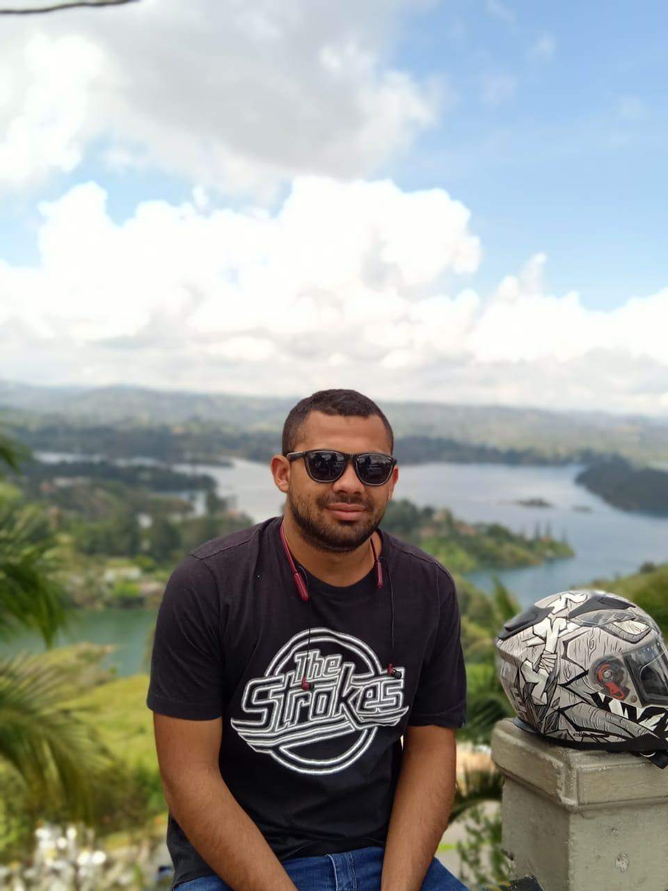
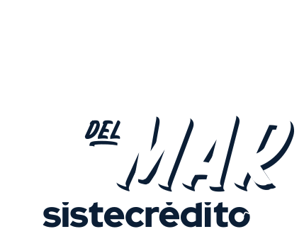

KÒRSWILL
Evolución de marca, sistema visual y experiencia digital.
Caso en preparaciónDiseñador gráfico y creativo · Medellín, Colombia
Sebastian
Pallares Ruiz
Desarrollo campañas, identidades y experiencias gráficas para marcas, eventos y proyectos culturales, combinando concepto, sistema visual y ejecución.

He trabajado con
01 / Proyectos seleccionados
Una selección de proyectos desarrollados en equipo y de forma independiente, presentados como sistemas visuales y casos de estudio.
Sistema gráfico aplicado a comunicación, merchandising, gran formato y experiencia de carrera.
Ver caso ↗Evolución de marca, sistema visual y experiencia digital.
Caso en preparación
Identidad de campaña para los diez años de la carrera en Cartagena.
Ver caso ↗
Campaña gráfica 2025 para la feria de vivienda nueva de CAMACOL Antioquia.
Ver caso ↗02 / Perfil profesional
Soy Sebastian Pallares Ruiz, diseñador gráfico y creativo con experiencia en campañas, eventos, identidad visual, piezas digitales, impresos, merchandising y producción gráfica.
Desde junio de 2019 hago parte del equipo de MIRAPALTECHO como creativo, participando en proyectos para marcas y eventos de alcance regional y nacional. Estos procesos se han desarrollado bajo la dirección creativa de Pablo Molina, con su acompañamiento, orientación, dirección y contribuciones a lo largo de cada proyecto.
En este recorrido he trabajado habitualmente junto a Jorge Zapata y Santiago Ospina. En los proyectos de MIRAPALTECHO los tres participamos como equipo de ejecución en partes iguales, bajo la dirección creativa de Pablo Molina.
De manera independiente desarrollo proyectos como KÒRSWILL, donde trabajo directamente con la marca en su evolución visual, piezas de comunicación y experiencia digital.
03 / Experiencia
Diferencio claramente el trabajo desarrollado dentro de equipos creativos y los proyectos que lidero de manera independiente.
Diseño y desarrollo de piezas para campañas, eventos, redes sociales, material impreso, merchandising, gran formato y aplicaciones de marca. Todos los proyectos presentados dentro de MIRAPALTECHO se acreditan bajo la dirección creativa de Pablo Molina.
Trabajo directo con la encargada de la marca para fortalecer su identidad, mejorar las piezas existentes y desarrollar un sistema visual más consistente.
Identidad visual · Manual de marca · Landing page · Piezas de comunicación
Apoyo al área de diseño y multimedia mediante piezas gráficas, brochures, tarjetas, volantes, plantillas de video, convocatorias, emailing, retoque fotográfico y otros requerimientos de comunicación.
04 / Formación
Formación técnica y conceptual aplicada posteriormente a campañas, sistemas gráficos y proyectos de comunicación visual.
Formación en diseño gráfico, producción visual, comunicación, herramientas digitales y gestión de proyectos de imagen.
Formación secundaria y base académica previa al desarrollo profesional en el campo creativo.
05 / Capacidades
Mi perfil combina pensamiento visual, producción y adaptación de un mismo sistema a diferentes puntos de contacto.
Desarrollo de ideas, lenguajes gráficos, jerarquías, recursos visuales y criterios que permiten mantener coherencia entre múltiples piezas.
Adaptación del concepto a redes, impresión, merchandising, señalización, números, camisetas, medallas, empaques y formatos de gran escala.
Preparación de artes, retoque, edición, piezas audiovisuales y acompañamiento del proceso hasta su aplicación final.
Herramientas principales
06 / Forma de trabajo
Reviso el contexto, la audiencia, el objetivo y las necesidades reales del proyecto.
Organizo referencias, concepto, dirección visual, jerarquías y criterios de aplicación.
Construyo el sistema gráfico y lo adapto a los formatos requeridos.
Preparo archivos, verifico consistencia y ajusto el resultado según su uso real.
07 / Contacto
Estoy disponible para conversar sobre oportunidades profesionales, proyectos de diseño y colaboraciones independientes.